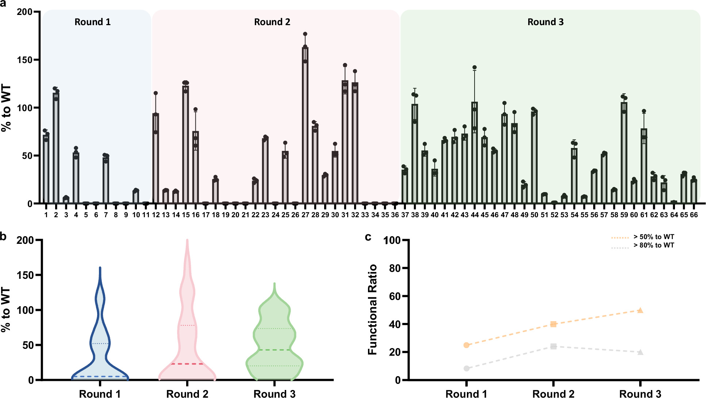

生成式人工智能设计功能性硫醇化结构域以重编程非核糖体肽合成酶
Nature communications
【摘要级解读】研究关注生成式模型能否设计依赖瞬态、情境特异性界面的非核糖体肽合成酶结构域。作者结合三种预训练模型、设计—构建—测试—学习循环及数据引导筛选，生成76个全新硫醇化结构域，并在体内测试578个重组变体。摘要报告设计结构域支持多类架构产物形成，产量最高约为天然结构域对照的3倍；一个代表性设计还表现出热稳定性改善。结果支持情境适配的蛋白质生成设计，但不足以判断整体成功率。[摘要]

查看大图图解：三轮设计分别比较各个 T 结构域变体的相对产量、活性分布和达到指定活性阈值的比例。不同变体的表现差异明显，后续轮次的整体分布有所改善；图中结果来自最小合成系统，不能直接等同于完整装配线的产量。
Generative AI designs functional thiolation domains for reprogramming non-ribosomal peptide synthetases.
依据公开摘要整理，未核验全文细节。解读与建议不代表作者结论。 论文依据 1
中文导读
【摘要级解读】研究关注生成式模型能否设计依赖瞬态、情境特异性界面的非核糖体肽合成酶结构域。作者结合三种预训练模型、设计—构建—测试—学习循环及数据引导筛选，生成76个全新硫醇化结构域，并在体内测试578个重组变体。摘要报告设计结构域支持多类架构产物形成，产量最高约为天然结构域对照的3倍；一个代表性设计还表现出热稳定性改善。结果支持情境适配的蛋白质生成设计，但不足以判断整体成功率。[摘要]
阅读建议建议重点阅读其生成设计与实验反馈结合的方法，以及跨装配线架构的功能验证；与给定generative_design标签直接相关，但不能将蛋白质设计结果直接视为工程结构可靠性证据。[摘要]
- 研究问题
- 【论文摘要】核心问题是生成式模型能否工程化改造动态巨型合成酶，而不仅是设计孤立蛋白。摘要强调其活性依赖“transient, context-specific domain interfaces”。非核糖体肽合成酶是研究载体，难点在于结构域必须适配不同相互作用情境。[摘要]
- 方法与路线
- 【论文摘要】作者整合ESM3、ProteinMPNN和EvoDiff，结合设计—构建—测试—学习循环及数据引导优先排序，生成76个全新硫醇化结构域。在体内构建并测试578个重组变体，覆盖最小、全长和混合装配线；摘要未说明各模型的具体分工。[摘要]
- 创新与比较
- 【解读】值得关注的创新定位，是把生成设计用于具有动态界面约束的生物合成装配线重编程，而非仅优化单个结构域的静态性质。摘要以“context-conditioned engineering”概括这一方向，但未提供与既有方法的系统比较，不能据此确认首创性。[摘要]
- 证据与发现
- 【论文摘要】设计结构域支持跨架构产物形成，并使重组连接处的混合体具备催化活性；产量最高约为天然结构域对照的3倍。一个代表性设计的熔解温度提高12 °C。分子动力学提示整体稳定性保持，而状态依赖的结构域间接触网络发生重塑。[摘要]
- 局限与边界
- 【解读：证据边界】摘要未报告功能设计所占比例、产量分布、重复次数或统计不确定性，因此最高增益不能代表平均表现。热稳定性结果仅对应一个代表性设计。上述属于当前材料的信息缺口，并非作者明确承认的局限；仅凭摘要也无法判断模拟与功能变化的因果关系。[摘要]
- 方向关联
- 【解读】与给定generative_design标签的联系直接：生成模型提出候选，实验结果用于学习和优先排序。对结构设计与可靠性研究，可借鉴情境适配及多层次验证思路；但研究对象是生物合成酶，摘要没有智能运维、工程结构失效概率或服役可靠性的直接证据。[摘要]
- 后续研究建议
- 【建议】后续阅读全文时，应优先核查候选筛选规则、不同模型的贡献、失败设计及跨架构性能分布，再评估方法的可复用性。若迁移到工程设计，可研究条件化生成与闭环验证的结合，但需重新定义物理约束和可靠性指标；这属于研究建议，而非作者已验证的成果。[摘要]